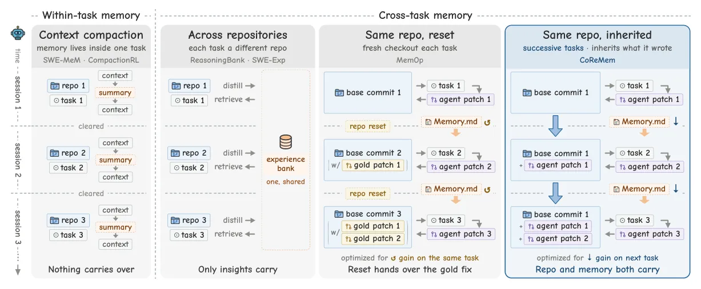
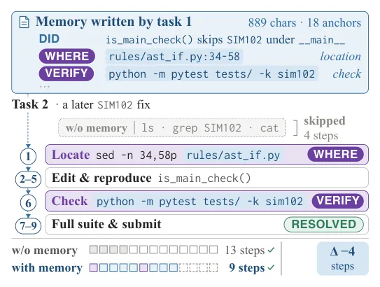
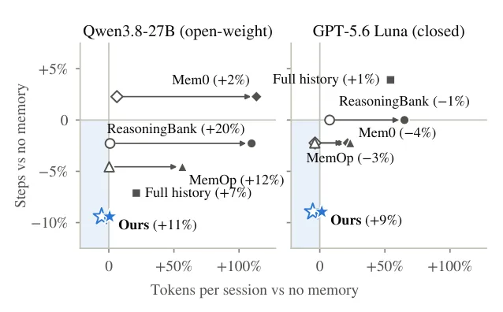

O Problema da Memória em Tarefas Sucessivas
Em desenvolvimento de software real, agentes de codificação raramente enfrentam problemas isolados. Eles operam em repositórios que evoluem ao longo do tempo, lidando com tarefas que chegam sequencialmente. Cada nova tarefa herda o estado do código deixado pelas anteriores. O desafio central não é apenas resolver o bug atual, mas decidir que informações guardar para tarefas futuras que ainda são desconhecidas.
Pesquisas anteriores frequentemente estudavam questões de repositório de forma independente ou transferiam experiência geral entre repositórios diferentes. Outros métodos acumulavam memória, mas resetavam o estado do repositório entre as tarefas, o que não reflete a realidade de um projeto vivo. O CoReMem, desenvolvido por pesquisadores da Yale University, Tsinghua University e Goodvision AI, foca especificamente no cenário onde tanto o estado do repositório quanto a memória são herdados por tarefas invisíveis no futuro.
Neste contexto, o agente precisa equilibrar dois custos: o esforço para escrever e ler a memória, e o benefício potencial de usar essa memória para resolver a próxima tarefa mais rápido. Escrever muita memória é caro e pode poluir o contexto. Escrever pouco pode fazer o agente redescobrir informações já adquiridas. O CoReMem propõe uma estrutura que internaliza esses custos, guiando o design da memória e a adaptação do agente através de uma avaliação prospectiva do valor da memória na próxima tarefa.

A Ideia Central: Âncoras e Valoração Prospectiva
A inovação principal do CoReMem reside em como a memória é estruturada e como seu valor é medido. Em vez de armazenar resumos gerais ou logs completos, o sistema constrói uma memória compacta baseada em 'âncoras'. Uma âncora consiste em duas partes: uma localização no repositório (WHERE) e uma verificação executável (VERIFY). Por exemplo, a memória pode indicar que a função 'is_main_check()' pula a regra SIM102 sob '__main__' em um arquivo específico, e fornecer o comando de teste para verificar isso.
Para determinar quais âncoras são valiosas, os autores introduzem a 'Valoração Prospectiva de Segmentos'. Este mecanismo compara execuções da próxima tarefa com e sem segmentos individuais da trajetória da tarefa anterior, mantendo o mesmo estado herdado do repositório. Se a presença de uma âncora reduz significativamente o esforço necessário para resolver a nova tarefa, ela é considerada valiosa. Se não, ela é descartada, evitando o acúmulo de ruído.
Essa abordagem contrasta com métodos que otimizam a memória baseada no ganho na tarefa que a produziu. No CoReMem, o foco é estritamente no ganho para a tarefa sucessora. Isso garante que a memória contenha apenas informações que realmente aceleram o agente em cenários futuros, alinhando o design da memória com o objetivo final de eficiência em tarefas sucessivas.

Adaptação do Agente e Crédito de Valor
Ter uma boa memória não basta; o agente precisa saber usá-la. O CoReMem inclui um módulo de adaptação do agente que estima o valor da memória 'on-policy' durante a execução. Isso é feito comparando grupos de rollout (execuções) com e sem memória. A recompensa usada nesse treinamento prioriza a resolução da tarefa e penaliza o número de passos, mas apenas nas execuções bem-sucedidas.
Um componente crítico aqui é o 'Crédito de Valor com Portão de Proveniência'. Em vez de atribuir o ganho de performance apenas ao resultado final, o sistema identifica quais passos específicos do agente utilizaram as âncoras fornecidas pela memória. O termo de valor adicional é atribuído apenas a esses passos, enquanto cada passo mantém o crédito pelo resultado final. Isso permite que o modelo aprenda a confiar e a agir sobre as informações da memória de forma precisa, em vez de apenas aprender a resolver o problema de qualquer maneira.
Esse treinamento pós-treinamento (post-training) internaliza o custo. O agente aprende que usar a memória economiza passos e tokens, mas também aprende que ignorar a memória ou usá-la incorretamente pode ser prejudicial. O resultado é um modelo que se adapta dinamicamente ao contexto herdado, reduzindo o esforço cognitivo e computacional necessário para tarefas sucessivas.
Resultados Experimentais no ChainSWE
Os autores avaliaram o CoReMem no benchmark ChainSWE, utilizando o mini-swe-agent com 100 cadeias de tarefas divididas em treinamento e teste sobre repositórios disjuntos. Eles compararam o CoReMem com a ausência de memória, com o histórico completo das tarefas anteriores e com três métodos de memória existentes: Mem0, MemOp e ReasoningBank.
Com o modelo de ator congelado, o CoReMem reduziu o número de passos em todos os seis modelos de ator testados, com reduções significativas de 9% a 13% em três deles. Crucialmente, a taxa de resolução não caiu; em cinco dos modelos, ela aumentou, e permaneceu inalterada no Opus. Em termos de eficiência, o CoReMem operou dentro de -7% a +5% do total de tokens em comparação com a execução sem memória, demonstrando que a economia de passos não veio à custa de um consumo excessivo de tokens.
Os métodos concorrentes (Mem0, MemOp, ReasoningBank) consumiram significativamente mais tokens do que o CoReMem em cinco dos seis modelos. Isso sugere que a abordagem de âncoras compactas é mais eficiente do que armazenar resumos de contexto ou experiências gerais distiladas.

Ablação e Análise Detalhada
Para entender o contributo de cada módulo, os autores realizaram ablações. O Módulo 1 (M1), que define as âncoras, mostrou-se eficaz: a memória do CoReMem empacota mais âncoras por mil caracteres injetados do que os concorrentes, e o agente atua em 1.32 âncoras por mil caracteres, contra 0.92 do MemOp, 0.19 do ReasoningBank e 0.14 do Mem0.
O Módulo 2 (M2), o treinamento pós-treinamento com internalização de custo, reduziu ainda mais os passos. O treinamento apenas com base na resolução (resolve-only RL) reduziu os passos no modelo 27B, mas o CoReMem completo foi superior. Isso prova que considerar o custo dos passos durante o treinamento é essencial para a eficiência.
O Módulo 3 (M3), o crédito de valor com portão de proveniência, mudou a forma como o modelo trata a memória. Sem ele, o modelo tende a ignorar a memória ou a usá-la de forma menos precisa. Com ele, o modelo aprende a associar o sucesso diretamente ao uso das âncoras, melhorando a confiabilidade da recuperação de memória.
Impacto no Custo e Eficiência
Um dos pontos fortes do CoReMem é a melhoria na relação custo-benefício. O treinamento pós-treinamento reduziu os passos em até 26% contra a execução sem memória, com 9% a 19% menos tokens totais. A taxa de resolução por token total aumentou de 38% a 46%, com uma média de 41%. Isso significa que, para cada token gasto, o agente é mais provável de resolver a tarefa.
Em termos financeiros, para modelos servidos por API, o CoReMem melhorou a resolução por dólar. Isso é particularmente relevante para aplicações comerciais, onde o custo de inferência é um fator limitante. O método não apenas torna o agente mais rápido, mas também mais barato de operar em escala.
Considerações Finais e Ética
O CoReMem representa um avanço na forma como pensamos sobre memória em agentes de código. Ao focar no valor prospectivo e na estrutura de âncoras, ele evita o ruído e o custo excessivo de métodos anteriores. A internalização do custo no treinamento do agente garante que a memória seja usada de forma eficiente e confiável.
Do ponto de vista ético, o trabalho utiliza benchmarks públicos e modelos licenciados, sem participantes humanos. As sessões rodam em containers isolados. No entanto, a memória de longo prazo pode reter conteúdo do repositório, como caminhos de arquivos e comandos. Em repositórios privados, isso exige políticas rigorosas de controle de acesso e remoção de segredos antes do armazenamento. A memória, sendo texto plano, pode ser auditada e deletada, o que oferece transparência.
O Que Levar Embora
A memória para tarefas sucessivas não é sobre guardar tudo, mas sobre guardar o que importa. O CoReMem mostra que âncoras específicas (localização + verificação) são mais valiosas do que resumos gerais. Medir o valor da memória com base no ganho na próxima tarefa, e não na tarefa atual, é crucial para a eficiência. Treinar o agente para internalizar o custo de usar a memória resulta em menos passos, menos tokens e maior taxa de resolução.
O que fica
- CoReMem usa âncoras (localização e verificação) para memória compacta, otimizada para tarefas sucessivas herdadas.
- A valoração prospectiva mede o valor da memória com base no ganho na próxima tarefa, não na atual.
- O treinamento pós-treinamento internaliza o custo, reduzindo passos e tokens sem perder taxa de resolução.
- Em benchmarks ChainSWE, o CoReMem superou métodos concorrentes em eficiência de tokens e custo por resolução.
Paper original: CoReMem: Cost-Internalizing Memory for Successive Coding Tasks with Prospective Valuation
Comentários
Nenhum comentário ainda. Seja o primeiro.